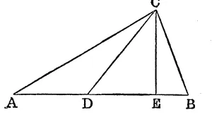
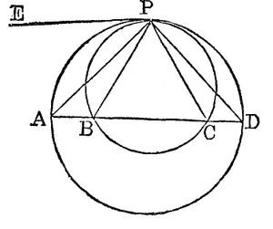
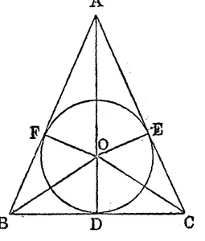

A Sequel to the First Six Books of the Elements of Euclid¶
Containing an Easy Introduction to Modern Geometry, with Numerous Examples (1888 / 1892)
[casey:sequel:1892])“I have endeavoured to collect and arrange in a systematic form all those elementary geometrical propositions not given in Euclid which a student will require in reading Mixed Mathematics, or before entering on the study of the Higher Pure Mathematics.”
—John Casey, Preface to A Sequel to Euclid, p. v (f.
0007)
Table of Contents¶
Books & Supplementary Chapter¶

Book I: Additional Propositions & Exercises
Book I of John Casey’s Sequel to Euclid (5th ed., 1888) provides fundamental additions to Euclidean triangle and quadrilateral geometry, introducing modern synthetic treatments of concurrency, medians, the orthocentre, and centres of mean position directly from congruence and parallelogram principles.

Book II: Additional Propositions & Exercises
Book II of John Casey’s Sequel to Euclid (5th ed., 1888) extends geometric algebra to quadratic segment identities, median theorems (Apollonius, Stewart), quadrilateral midpoint theorems (Euler), and the general quadratic moment theorem for centres of mean position (Leibniz).

Book III: Additional Propositions & Exercises
Book III of John Casey’s Sequel to Euclid (5th ed., 1888) establishes the modern theory of the circle: inverse points, circle power, orthogonal circles, the radical axis, the radical centre, Poncelet’s limiting points, and the foundational projective theory of poles and polars (La Hire).

Book IV: Additional Propositions & Exercises
Book IV of John Casey’s Sequel to Euclid (5th ed., 1888) treats inscribed, circumscribed, and escribed circles of triangles and regular polygons. It establishes fundamental relations between inradii and exradii, Heron’s formula for triangle area, metric properties of regular polygons, the Nine-Points Circle (Euler, Feuerbach), the tangency of the Nine-Points Circle to the incircle and excircles (Feuerbach’s Theorem), circumcircle bisector projections, and mean centres of vertices.

Book VI: Additional Propositions & Exercises
Book VI of John Casey’s Sequel to Euclid (5th ed., 1888) is the foundational modern extension of Euclidean proportion and projective geometry in the nineteenth century. Across eight monumental sections, Casey introduces Ceva’s and Menelaus’s transversal theorems, centres and axes of similitude (Monge’s theorem), the theory of harmonic section and the complete quadrilateral, circular inversion and Casey’s generalized Ptolemy theorem (with his celebrated proofs of Feuerbach’s and Hart’s theorems), coaxal circles and Poncelet’s theorem, anharmonic (cross) ratio, Desargues’s homology and Pascal’s hexagrammum mysticum, the theory of poles and polars with Brianchon’s theorem by reciprocation, and an extensive treasury of 142 miscellaneous exercises.

Supplementary Chapter: Recent Elementary Geometry of the Triangle
The Supplementary Chapter on the Recent Elementary Geometry of the Triangle was added by John Casey in the fourth edition (1886) of his Sequel and substantially expanded in the fifth (1888) and sixth (1892) editions. It marks the first comprehensive textbook synthesis in the English-speaking world of the vibrant French, Belgian, and British geometric revival inaugurated by Émile Lemoine at the 1873 Lyon Congress.
Bibliography
Every :cite: reference across the 3-Track Book Codex resolves to its canonical anchor below.
Master Concordance & SymPy Circle Audit
Every proposition cluster in John Casey's Sequel to Euclid bridges classical Euclidean propositions (geometor/euclid, geometor/elements) forward to Nathan Altshiller-Court's College Geometry (geometor/altshiller-court), Clark Kimberling's Encyclopedia of Triangle Centers (geometor/etc), and projective configurations in geometor/pappus:
Technical Glossary
Every :term: reference across the 3-Track Book Codex resolves to its technical definition below.
Scholarly Apparatus¶
Euclid–Casey–Altshiller-Court–ETC–Pappus Master Concordance & SymPy Circle Audit
Technical Glossary of Circle, Projective & Triangle Geometry